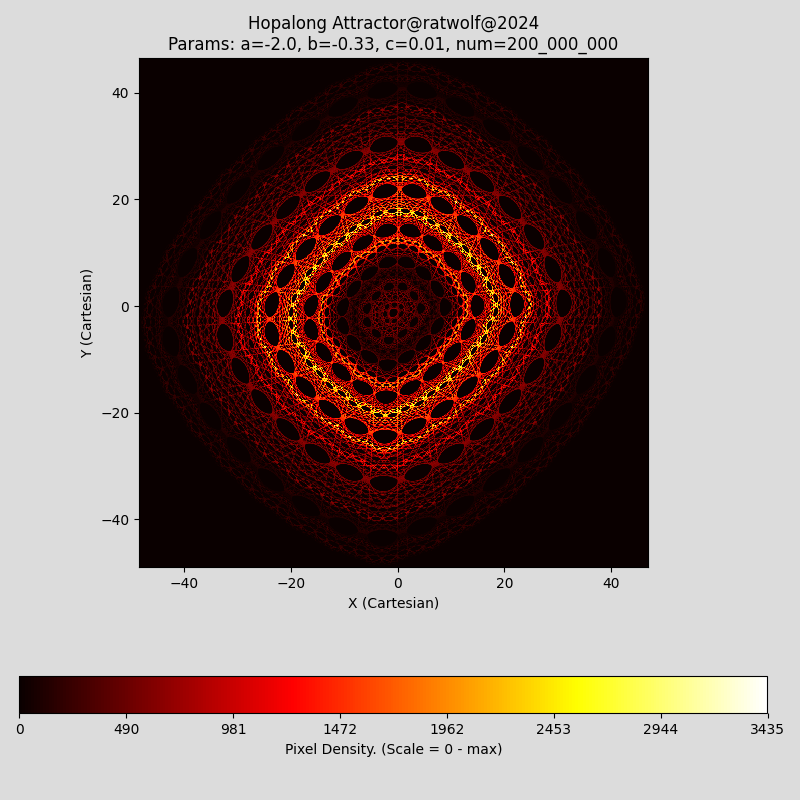
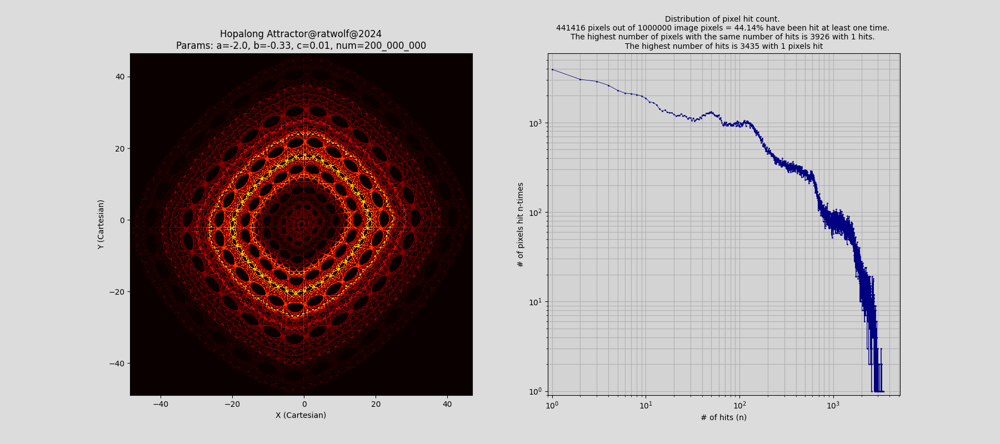

Calculate & Visualize the Hopalong Attractor with Python
- Calculate & Visualize the Hopalong Attractor with Python
- Abstract
- Requirements
- Usage
- Features, Functionality, and Special Scenarios
- Performance Optimization
- Recent Code Changes
- Enjoy the Exploration
- References
Abstract
The “Hopalong” attractor
This Python program computes and visualizes the “hopalong” attractor by iterating the following system of recursive functions (1) and (2):
\[ \begin{cases} x_n+1\space=&y_n-sgn(x_n)\times\sqrt{∣b\times x_n-c∣}&(1) \\ y_n+1\space=&a-x_n&(2) \end{cases} \]
Where:
- xn and yn represent the coordinates at the nth iteration.
- a, b, c are user defined parameters that shape the attractor
- The sequence starts from an initial point (x0 , y0) = (0 , 0)
The chosen core algorithm and the motivation for it
A two-pass algorithm is employed to compute the Hopalong Attractor by sequential processing in both passes through straightforward structure and loops.
In the first pass, the algorithm determines the overall trajectory extents, which consist of the minimum and maximum values of the attractor trajectory. Python functions such as min(), max() were intentionally not used.
In the second pass, the algorithm generates the sequence of trajectory points and maps them directly to image pixel coordinates, representing the attractor hit pattern (pixel value > 0). This hit information is updated and stored in an image array, which is initialized with zero values.
The program uses Matplotlib to represent the attractor as an image in order to take advantage of its extensive image processing and manipulation capabilities. With optimal and consistent processing speed, it supports a very high number of iterations with low memory footprint. The program is designed with minimal complexity to allow effective use of Just-In-Time (JIT) compilation, thus further improving execution speed.
For further hints regarding two-pass approach, see Two-Pass Approach
Requirements
To run this program, the following Python libraries or Modules must be installed / imported:
- matplotlib *
- numpy *
- numba * (as of October 26, 2024, Numba only supports Python versions up to 3.12.7. Versions 3.13.x are currently not supported)
- math *
(* mandatory)
Optional (for performance tracking):
- time
- resource
Import the “Time” and “Resource” libraries if you want to track process time and system memory used. Otherwise, please comment out the relevant code snippets at import section and main() function.
#...
#import time
#import resource
# Start the time measurement
# start_time = time.process_time()
#...
# End the time measurement
# end_time = time.process_time()
"""
# Calculate the CPU user and system time
cpu_sys_time_used = end_time - start_time
# Calculate the memory resources used
memMb=resource.getrusage(resource.RUSAGE_SELF).ru_maxrss/1024.0/1024.0
print(f'CPU User&System time used: {cpu_sys_time_used:.2f} seconds')
print (f'Memory (RAM): {memMb:.2f} MByte used')
"""Usage
Input Parameters
Upon running the program, you’ll be prompted to enter the following parameters:
- a (float or integer): Parameter ‘a’ of the Hopalong equation.
- b (float or integer): Parameter ‘b’ of the Hopalong equation.
- c (float or integer): Parameter ‘c’ of the Hopalong equation.
- num (integer): The number of iterations (e.g., 1000000 or 1_000_000).
Example parameters:
- a = -2
- b = -0.33
- c = 0.01
- num = 200_000_000
These parameters directly influence the appearance of the attractor, with different values yielding different patterns.
Output
The program generates a visual representation of the Hopalong Attractor. The resulting image displays the trajectory where colors represent the “density of hits” (i.e., how often a particular point was visited).
Basic Version

Extended Version

Back to Table of ContentsFeatures, Functionality, and Special Scenarios
Program Variants
This program is available in two versions:
- Basic version: Calculation and display of the Hopalong Attractor and the pixel density via a color bar.
- Extended version: Includes the features of the basic version except color bar, plus statistics and visualization of the pixel hit counts distribution.
Examples of outputs can be found in the “Usage” section above.
Image Pixels and Color Mapping
In both versions of the program (basic and extended), pixels are color-coded based on the number of times the trajectory points “hit” them, referred to as the “pixel hit count.”
Pixel Hit Counts (Density) and Visualization
Point to Pixel Mapping:
Trajectory points are floating-point values and do not directly correspond to pixel coordinates. Instead, these points are mapped to integer pixel coordinates of the image. The mapping process involves scaling factors that take into account the image size and the trajectory extents (minimum and maximum values). For more details, see the “compute_trajectory_and_image” function in the code.Lossy Integer Conversion and Density Representation:
When floating-point values are mapped to pixel coordinates, they are converted to integers. This conversion allows closely spaced points of the floating-point plane to be assigned to the same integer pixel, leading to some pixels being “hit” multiple times. Initially, the image array is set to zero. Each time a pixel is hit, its value is incremented, which results in varying hit counts across the image. These hit counts provide a discrete measure of concentration, indicating the density and proximity of the trajectory points in floating-point plane. The total number of hit counts matches the number of iterations.Visualization with Colormap:
Matplotlib’s “hot” colormap is used to represent the hit count information. Matplotlib applies normalization to scale the hit count within the limited color range of the colormap. This scaling creates a color gradient that ranges from dark colors, indicating low hit counts, to light colors, indicating high hit counts. Consequently, the colormap effectively visualizes areas of higher activity within the attractor.
Application of Copysign (Math Module) as Signum function
The programs now utilizes the math.copysign function “copysign(x,y)”
Return a float with the magnitude (absolute value) of x but the sign of y.
On platforms that support signed zeros, copysign(1.0, -0.0) returns -1.0.
\[ copysign(1.0,x) =\begin{cases} 1.0 & if & x & is &positive, & +0.0 & or &INFINITY \\ -1.0 & if & x & is &negative, & -0.0 & or &NEG. INFINITY \end{cases} \]
This adjustment changes the behavior of some cases to produce intricate patterns. For example:
a = 1, b = 2, c = 3 or
a = 0, b = 1, c = 1 or
a = 1, b =1, c = 1
Special constellations and attractor edge cases
Certain parameter sets will not produce intricate patterns such as:
Set 1: a = p , b = 0, c = 0
Set 2: a = p, b = 0, c = p
Set 3: a = p, b = p, c = 0
Where (p) is a constant parameter that remains the same within each of these sets.
Instead, you may observe high-density cycles, characterized by a relatively small number of pixels being hit repeatedly. This suggests that in these cases, the system may settle into a periodic orbit. Additionally, it seems that certain of these “high-density cycle pixels” lie at the boundaries of the attractor extents.
For example, with parameter set (3) the Hopalong equations are given by:
\[ \begin{cases} x_n+1\space=&y_n-sgn(x_n)\times\sqrt{∣p\times x_n∣}&(1) \\ y_n+1\space=&p-x_n&(2) \end{cases} \]
and we observe the 3-cycle: (0, 0), (0, p), and (p, p). The pixel density is: num / 3
start: (x0 , y0) = (0 , 0)
–> (x1 , y1) = (0 , p)
–> (x2 , y2) = (p , p)
–> (x3 , y3) = (0 , 0), cycle completed
So If you want to experiment with this, it is recommend that you reduce the total number of pixels by reducing the image resolution (e.g. 100x100) in order to achieve a better visual representation of the pixels bordering the minimum and maximum extents of the trajectory.
def main(image_size=(100, 100), color_map='hot'):By the way, this scenario is an ideal use case for the extended program version with pixel hit count statistics.
Optional Features
Execution time* and resources: Starts after user input and measures the CPU time for the entire process including image rendering and shows the system memory used.
*Since interactions with the plot window, e.g. zooming, panning, mouse movements, are measured, it is recommended to close the plot window automatically. This can be done, for example, by using the commands plt.pause(1) followed by plt.close(fig). As long as there is no interaction with the plot window, the “plt.pause() time” is not recorded by the “time.process_time()” function used.
#plt.show()
plt.pause(1)
plt.close(fig)Performance Optimization
Just-In-Time Compilation (JIT)
The program leverages the Numba JIT just-in-time compilation for performance optimization. This avoids the overhead of Python’s interpreter, providing a significant speedup over standard Python loops.
Dummy Calls
For JIT-compiled functions dummy calls are made. This step ensures that the function is precompiled before it is called by the interpreter, thus avoiding compilation overhead the first time the code is executed.
Parallelization and race conditions
The parallel loop function “prange” from the “Numba” library, which is fundamentally not applicable for cross-iteration dependencies, such as here when calculating the trajectory points of recursive functions, is therefore not used. A restructuring of the second pass, in which a separate function populates the image array with prange, would be possible, but would lead to potential race conditions with an inconsistent pixel hit rate and was therefore not implemented.
Two-Pass Approach
By separating the extent calculation (first pass) from trajectory point mapping (second pass), this approach allows for efficient sequential processing. Knowing the overall trajectory extents in advance enables direct and efficient mapping of points to image pixels, optimizing memory usage and maintaining consistent performance.
Memory Efficiency: The two-pass approach reduces memory requirements by recalculating trajectory points, eliminating the need for large-scale caching.
JIT Compatibility: The simple, sequential structure is well-suited for Just-In-Time (JIT) compilation, enhancing execution speed.
Scalability: As the number of iterations grows, the two-pass approach’s efficiency in memory usage and processing speed becomes much more advantageous.
Disadvantage:
Trajectory points must be computed in both passes, but the impact of this trade-off is quite small and as mentioned above, as the number of iterations increases, the efficiency of the two-pass approach becomes much more advantageous in terms of memory usage and processing speed.
Two-Pass Code Section
@njit #njit is an alias for nopython=True
def compute_trajectory_extents(a, b, c, num):
# Dynamically compute and track the minimum and maximum extents of the trajectory over 'num' iterations.
x = np.float64(0.0)
y = np.float64(0.0)
min_x = np.inf # ensure that the initial minimum is determined correctly
max_x = -np.inf # ensure that the initial maximum is determined correctly
min_y = np.inf
max_y = -np.inf
for _ in range(num):
# selective min/max update using direct comparisons avoiding min/max function
if x < min_x:
min_x = x
if x > max_x:
max_x = x
if y < min_y:
min_y = y
if y > max_y:
max_y = y
# signum function respecting the behavior of floating point numbers according to IEEE 754 (signed zero)
xx = y - copysign(1.0, x) * sqrt(fabs(b * x - c))
yy = a-x
x = xx
y = yy
return min_x, max_x, min_y, max_y
# Dummy call to ensure the function is pre-compiled by the JIT compiler before it's called by the interpreter.
_ = compute_trajectory_extents(1.0, 1.0, 1.0, 2)
@njit
def compute_trajectory_and_image(a, b, c, num, extents, image_size):
# Compute the trajectory and populate the image with trajectory points
image = np.zeros(image_size, dtype=np.uint64)
# pre-compute image scale factors
min_x, max_x, min_y, max_y = extents
scale_x = (image_size[0] - 1) / (max_x - min_x)
scale_y = (image_size[1] - 1) / (max_y - min_y)
x = np.float64(0.0)
y = np.float64(0.0)
for _ in range(num):
# map trajectory points to image pixel coordinates
px = np.uint64((x - min_x) * scale_x)
py = np.uint64((y - min_y) * scale_y)
# populate the image array "on the fly" with each computed point
image[py, px] += 1 # respecting row/column convention, update # of hits
# Update the trajectory "on the fly"
xx = y - copysign(1.0, x) * sqrt(fabs(b * x - c))
yy = a-x
x = xx
y = yy
return image
# Dummy call to ensure the function is pre-compiled by the JIT compiler before it's called by the interpreter.
_ = compute_trajectory_and_image(1.0, 1.0, 1.0, 2, (-1, 0, 0, 1), (2, 2)) Alternative Solutions
While the two-pass approach is the chosen solution, it is important to consider alternative strategies that could be employed for trajectory calculations. Below are some alternative solutions that were evaluated, each with its own trade-offs in performance, memory usage, and complexity.
One-Pass Approach with Caching
- Description: Trajectory points are calculated only once and stored in an array which allows the use of Numpy’s vectorization capabilities, such as the vectorized determination of the trajectory extents and the mapping of trajectory points to image pixels.
- Disadvantages: Depending on the number of iterations, large memory resources are required for caching the trajectory points and there may be performance degradation due to system memory swapping or even memory overflows. However, this depends on the system environment.
Chunked One-Pass Approach with caching
- Description: Trajectory points are processed in smaller segments (chunks) while caching points to manage memory usage.
- Disadvantages: While it keeps memory consumption low, this method adds complexity and overhead, often resulting in performance that is similar to or slower than the two-pass method.
One-Pass Approach without Caching
Description: This method attempts to compute and map points in a single pass without storing previously computed points.
Disadvantages: Requires continuous remapping of previously mapped pixels every time the trajectory extents change, making the method complicated and ineffective.
Feasibility: Theoretical approach, practically infeasible due to the following major limitations:
Data Loss and Inability to Recover Exactly: Due to the lossy nature of integer mapping, previously computed floating-point values cannot be retrieved for remapping, making it impossible to recover the original values once they have been mapped to integers.
several closely spaced points of the floating point plane can be contained in an integer pixel.
Possible other, more sophisticated solutions
No other solutions have been investigated or considered so far. More sophisticated solutions also contradict the approach of minimal complexity design. Unless a further significant performance increase for high-iteration calculations would make it interesting to consider.
Conclusion
Overall, the two-pass approach strikes the best balance of speed, efficiency, and simplicity, making it ideal for high-iteration calculations of the Hopalong Attractor. Despite the need to recalculate trajectory points, it avoids the pitfalls of alternative solutions.
Recent Code Changes
Utilize a ‘Color Bar’ to indicate the Pixel Density (Basic Version)
#...
img=ax.imshow(image, origin='lower', cmap=color_map, extent=extents, interpolation='none') # modification 'img=ax.imshow' to apply 'colorbar'
#...
cbar = fig.colorbar(img, ax=ax,location='bottom') #'colorbar'
cbar.set_label('Pixel Density') # title 'colorbar'
ä...Enjoy the Exploration
Experiment with different image resolutions, color maps or populate the image array differently than based on the hit count and explore new visual views.
References
Computers in Art, Design and Animation (J. Landsdown and R. A. Earnshaw, eds.), New York: Springer–Verlag, 1989.
Barry Martin, “Graphic Potential of Recursive Functions,” in Computers in Art, Design and Animation pp. 109–129.
ISBN-13: 978-1-4612-8868-8, e-ISBN-13: 978-1-4612-4538-4
A.K. Dewdney in Spektrum der Wissenschaft “Computer Kurzweil” 1988, (German version of Scientific American)
ISBN-10: 3922508502, ISBN-13: 978-3922508502
References for Python Libraries and Modules
- NumPy Documentation: NumPy is a fundamental package for scientific computing in Python.
- Matplotlib Documentation: A library for creating static, interactive, and animated visualizations.
- Numba Documentation: Numba is a just-in-time compiler for optimizing numerical computations.
- Python Built-in Functions: Overview of built-in functions available in Python.
- Python Math Module: Access mathematical functions defined by the C standard.
- Python Time Module: Time access and conversions.
- Python Resource Module: Interface for getting and setting resource limits.